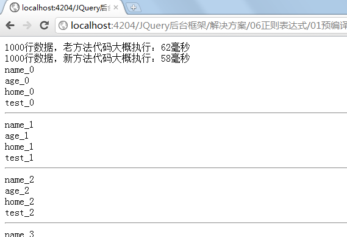
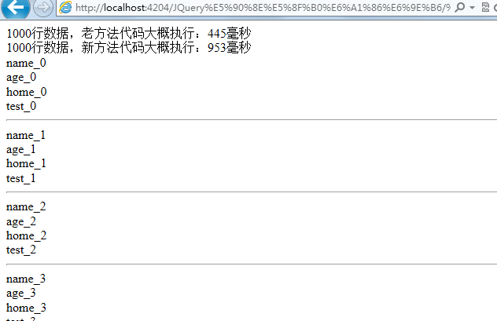
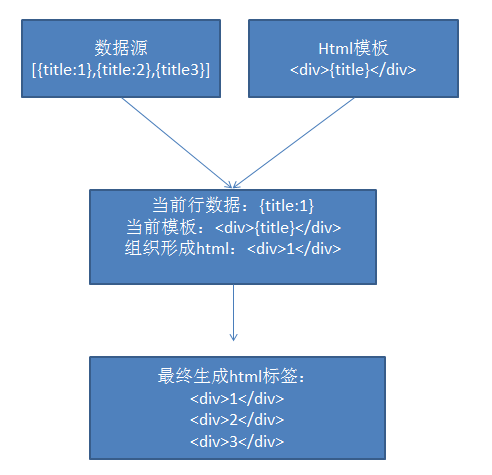
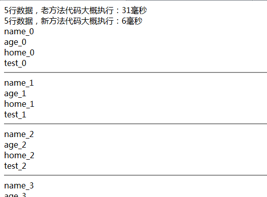
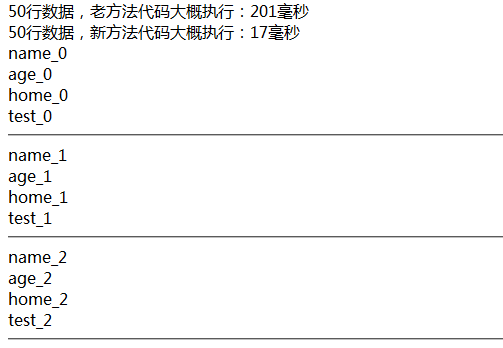
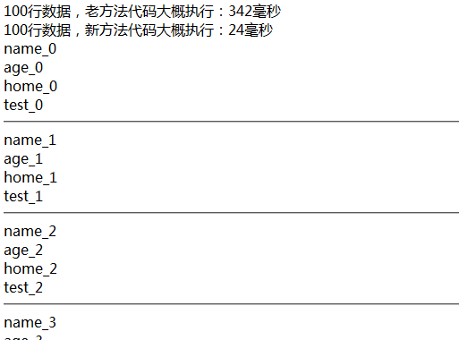
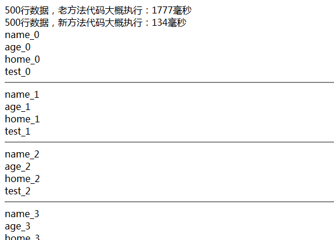

【jquery仿dataList——性能优化】模板预编译思想提高性能10倍以上！！！
那撒，IE和google性能不减反增，求高手解释.......


前言
呵呵，当然，什么预编译什么性能提高5倍以上基本上市坑爹的，这里就是为了吸引阅读量，哈哈。
上当的大哥主动顶下哇？？？
正题
之前针对这个专题也写了很多文章了，到今天一个基本的框架已经成型，最近做了一次优化——关于模板的。
居然性能差距达10倍以上还真不是开玩笑呢！！！
我先简要说明下这个插件的流程
我们提供二维数据源+数据模板——》每行数据和数据模板进行数据组织生成最终html标签——》加入文档

优化处理
之前处理起来便是进行正则表达式替换，反正功能达到要求了也就没有管那么多，今天突然想到一招预编译方法（其实有参照啦）
改了后明显感觉到数据变化，有图有真相，请看！！！




看见了差距了吧！！！
最后附上代码：
源代码
<!DOCTYPE html PUBLIC "-//W3C//DTD XHTML 1.0 Transitional//EN" "http://www.w3.org/TR/xhtml1/DTD/xhtml1-transitional.dtd">
<html xmlns="http://www.w3.org/1999/xhtml">
<head>
<title></title>
<script src="http://www.cnblogs.com/scripts/jquery-1.7.1.js" type="text/javascript"></script>
<script type="text/javascript">
$(document).ready(function () {
var data = [];
var i;
for (i = 0; i < 1000; i++) {
var temp = {};
temp.name = "name_" + i.toString();
temp.age = "age_" + i.toString();
temp.home = "home_" + i.toString();
temp.test = "test_" + i.toString();
data.push(temp);
}
var template = "<div>{name}</div><div>{age}</div><div>{home}</div><div>{test}</div><hr/>"
var wl1 = $("#wl1");
var wl2 = $("#wl2");
var wl3 = $("#wl3");
var wl4 = $("#wl4");
//原始做法
function old() {
var now = new Date();
var beginTime = now.getTime();
var html = "";
$.each(data, function (index, v) {
var tempHtm = template;
$.each(v, function (i, item) {
var regStr = "/\\{" + i + "\\}/g";
var reg = eval(regStr);
tempHtm = tempHtm.replace(reg, item);
});
html += tempHtm;
});
wl1.append(html);
var endT = new Date();
var endTime = endT.getTime();
var spTime = (endTime - beginTime);
wl3.append(""+i.toString()+"行数据，老方法代码大概执行：" + spTime + "毫秒");
}
//现在做法
function update() {
var now = new Date();
var beginTime = now.getTime();
var templateObj = [];
var reg = /\{[A-Za-z]*\}/;
var para = reg.exec(template);
var tempHtml = template;
while (para && para.length > 0) {
var len = para.index;
var temp = {};
temp.html = tempHtml.substr(0, len);
temp.field = para[0].substr(1, para[0].length - 2); ;
templateObj.push(temp);
tempHtml = tempHtml.substr(len + para[0].length);
para = reg.exec(tempHtml);
}
var end = {};
end.html = tempHtml;
templateObj.push(end);
var html = "";
$.each(data, function (index, dataItem) {
var tempHtm = "";
$.each(templateObj, function (i, item) {
if (item.field) {
tempHtm = tempHtm + item.html + dataItem[item.field];
} else {
tempHtm = tempHtm + item.html;
}
});
html += tempHtm;
});
wl2.append(html);
var endT = new Date();
var endTime = endT.getTime();
var spTime = (endTime - beginTime);
wl4.append(""+i.toString()+"行数据，新方法代码大概执行：" + spTime + "毫秒");
}
old();
update();
});
</script>
</head>
<body>
<div id="wl3">
</div>
<div id="wl4">
</div>
<div id="wl1">
</div>
<div id="wl2">
</div>
</body>
</html>